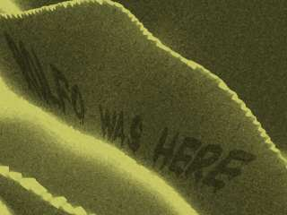

Raytracing
The first two images used in this episode of the Chronicle were created
using POV-Ray, an amazing free
raytracer.

The first image is of the Zorian Wasteland, where Rolfo
has written his name in huge letters of wet sand using the Everfull
Flask. The dunes are created using a height_field taken from Frank
Epple's entry to the 10/98 round of the
IRTC entitled
"contrast".
The font is the free Bloody truetype font by J. Fordyce. The
image source is available as a zip file.
Due to its large size the height_field is not included in the zip file;
it is available in the source code for F. Epple's
IRTC
entry

The second image shows the Al-Haddin conducting a ritual
to subvert the Heart of the World. The spellcasters are simple
CSG of cones, spheres, and cylinders. They look terrible up close,
but in this image the model is good enough (and much quicker to render
than a complex mesh model). The Apparatus is CSG of cylinders
and a torus. The image source is available.

The third image was created using Bryce 4 from
Metacreations. The humanoid figure in the center of the maelstrom (Krenic) was
exported from Poser 3, also from
Metacreations.
{kind=link}